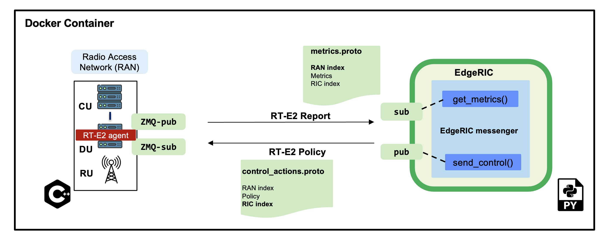
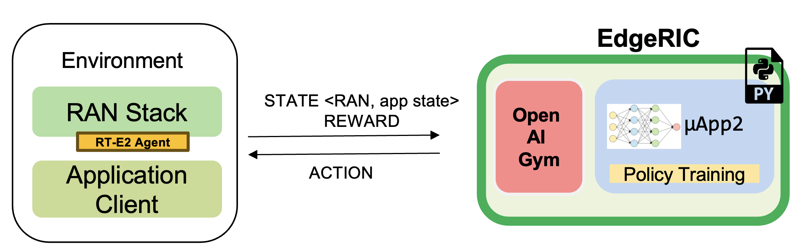

EdgeRIC tutorial
In this tutorial, we will go over the EdgeRIC architecture and installation of the srsRAN network facilitated with EdgRIC hooks. We also provide a containerized version of our codebase. We will discuss how to write μApps. As an example, we will run a real-time MAC scheduler μApp that assigns scheduling decisions per UE for each TTI. We will look at multiple scheduling algorithms with this μApp to demonstrate the system
behavior: Max Weight, Max CQI, Proportional Fairness, Round Robin, and an RL based scheduler
μApp demo: MAC scheduling
This μApp offers scheduling decisions to the RAN at the granularity of one TTI (~1ms). It adopts a weight based approach for its decision. The weight of an UE corresponds to its relative priority to be scheduled given the current state of the system. We list the metrics used by this μApp below:
Metrics: ue_data[rnti]['Tx'], ue_data[rnti]['CQI'], ue_data[rnti]['BL'] for each UE.
Actions Sent: weight_{i} which corresponds to the weight of each UE i
RT-E2 Policy Format for this μApp: RNTI_{i}, weight{i} where i corresponds to each UE.
Training Reinforcement Learning scheduling Policy
Here, we train an RL agent with the objective of total system throughput maximization. Listed below are the specifications for our training:
- Algorithm used: Proximal Policy Optimization
- State_space: [BL1,CQI1,BL2,CQI2.....]
- Action_space: ``[Weight1,Weight2.....]
- Reward: Total system throughput
Install srsRAN supporting EdgeRIC hooks
We will be using Option 2 in this tutorial!
Option 1: Install on your system
You would need Ubuntu 20 to run this repository, with option 2 you can run on any Linux environment
Dependencies and cloning the repository
sudo apt-get update
sudo apt-get -y upgrade
sudo apt-get install -y libfftw3-dev libmbedtls-dev libsctp-dev qt5-default libconfig++-dev net-tools nano libtool pkg-config build-essential autoconf automake git python3 python3-distutils python3-pip python3-apt libzmq3-dev python3-zmq software-properties-common
sudo apt-get update
sudo add-apt-repository ppa:gnuradio/gnuradio-releases
sudo apt-get update
sudo apt-get install -y gnuradio xterm python3-gi gobject-introspection gir1.2-gtk-3.0 iputils-ping iproute2 libx11-dev iperf
sudo pip3 install --upgrade pip
sudo pip3 install gym pandas torchvision tensorboard redis debugpy ray gymnasium dm_tree pyarrow typer scikit-image plotly
sudo pip3 install hydra-core==1.1.0
sudo pip3 uninstall -y protobuf
sudo pip3 install protobuf==3.20.*
git clone https://github.com/ushasigh/EdgeRIC-A-real-time-RIC.git
git checkout oaic-workshop
Compile the protobuf message schema
The protobuf schemas are found in srsran-enb/srsenb/protobufs for RAN and in edgeric for EdgeRIC
Compile the protobuf format for the RT-E2 agent
cd srsran-enb/srsenb/protobufs
protoc --cpp_out=../rtagent metrics.proto ## RT-E2 Report Message
protoc --cpp_out=../rtagent control_actions.proto ## RT-E2 Policy message
cd ../../..
The generated metrics.pb.cc and control_actions.pb.cc is included in this repository, so this step can be skipped
Compile the protobuf format for EdgeRIC
cd edgeric
protoc --python_out=. metrics.proto ## RT-E2 Report Message
protoc --python_out=. control_actions.proto ## RT-E2 Policy message
cd ..
The generated metrics_pb2.py and control_actions_pb2.py is included in this repository, so this step can be skipped
Build the repository
./make-ran.sh
All config files used in this tutorial are provided in .config
Option 2: Install the containerized version
We provide the Dockerfile to run this repository inside a container, the bash scripts account for development mode by mounting the docker volume to local machine

Let us first download and install the image of the compute environment
Terminal 0
git clone https://github.com/ushasigh/EdgeRIC-A-real-time-RIC.git
cd EdgeRIC-A-real-time-RIC
git checkout oaic-workshop
sudo docker pull nlpurnhyun/edgeric_base_oaic
# sudo ./dockerbuild_edgeric_oaic.sh
sudo ./dockerrun_edgeric_oaic.sh host 0
To ensure the Docker is running, run sudo docker images and verify the image exist nlpurnhyun/edgeric_base_oaic and run sudo docker ps to check it is running
Building the srsRAN with EdgeRIC support
Before the next step, make sure you are inside docker container.
./make_ran.sh
Note on Channel Emulation
We use a modified version of the srsue codebase to account for channel variation. Channel is abstracted by the CQI (Channel Quality Indicator) - a 5G MAC layer parameter defined to represent the wireless environment.

Included in this repository are the CQI trace datasets obtained from an extensive measurement drive, the traces can be found in srsran-ue/cqis
How to run the network
Running in Docker container: Run the following on every terminal before running the following set of commands
cd EdgeRIC-A-real-time-RIC
sudo ./dockerexec_edgeric_oaic.sh 0
Running natively: Use sudo for running all the commands
Setup the core and srsenb
Terminal 1: Run the GRC broker, we will run a 2UE scenario
python3 top_block_2ue_no_gui.py # OR ./top_block_2ue_23.04MHz.py if you have GUI support
This step is not needed in over the air mode
Terminal 2: Run the EPC
./run_epc.sh
Terminal 3: Run the enb
./run_enb.sh
Run the UEs
First add the UE namespaces
Terminal 4:
ip netns add ue1
ip netns add ue2
In this repository, we will use the modified srsue codebase provided in srsran-ue which provides support
to run UE with a specified channel trace collected from real world experiments [in our case, the channel is represented by CQI]
Updating the CQI channel trace: file under concern: srsran-ue/params{1}.txt for ue {i}, update line 5 with the desired CQI file which should be present in folder srsran-ue/cqis.
File: params1.txt
2
1 7
1
../cqis/random_1.txt
60000
# in line 1 First: period of cqi emulation
# in line 2 First: minimum of cqi emulation
# in line 2 Second: of maximum cqi emulation
# If in line 2 both values are zero, it reads a file to get realistic cqi data.
# in line 3 First: initial value of cqi emulation
# in line 4: filename of cqi trace
# in line 5: number of data
Option 1: Run automated scripts for 2 UEs:
Terminal 4:
./run_srsran_2ue.sh
Press t to view the UE metrics on console
Option 2: Run the UEs on separate terminals
cd srsran-ue/build
Run UE1:
sudo ./srsue/src/srsue ../.config/ue1.conf --rf.device_name=zmq --rf.device_args="tx_port=tcp://*:2001,rx_port=tcp://localhost:2000,id=ue,base_srate=23.04e6" --gw.netns=ue1 --params_filename="../params1.txt"
Run UE2:
sudo ./srsue/src/srsue2 ../.config/ue2.conf --rf.device_name=zmq --rf.device_args="tx_port=tcp://*:2011,rx_port=tcp://localhost:2010,id=ue,base_srate=23.04e6" --gw.netns=ue2 --params_filename="../params2.txt"
Press t to view the UE metrics on console
Known Issue
Make sure you have an immediate UE attach, UEs should not try to reattach
After every run, a clean build may be necessary, otherwise UEs may not attach. Run the following inside container:
Terminal 0
./stop_ran.sh
./make_ran.sh
What does immediate attach look like
Attaching UE...
Closing stdin thread.
Current sample rate is 1.92 MHz with a base rate of 23.04 MHz (x12 decimation)
Current sample rate is 1.92 MHz with a base rate of 23.04 MHz (x12 decimation)
. # of cqis: 60000 done!
Attaching UE...
Closing stdin thread.
Current sample rate is 1.92 MHz with a base rate of 23.04 MHz (x12 decimation)
Current sample rate is 1.92 MHz with a base rate of 23.04 MHz (x12 decimation)
.
Found Cell: Mode=FDD, PCI=1, PRB=25, Ports=1, CP=Normal, CFO=-0.2 KHz
Found Cell: Mode=FDD, PCI=1, PRB=25, Ports=1, CP=Normal, CFO=-0.2 KHz
Current sample rate is 5.76 MHz with a base rate of 23.04 MHz (x4 decimation)
Current sample rate is 5.76 MHz with a base rate of 23.04 MHz (x4 decimation)
Current sample rate is 5.76 MHz with a base rate of 23.04 MHz (x4 decimation)
Current sample rate is 5.76 MHz with a base rate of 23.04 MHz (x4 decimation)
Found PLMN: Id=00101, TAC=7
Found PLMN: Id=00101, TAC=7
Random Access Transmission: seq=9, tti=341, ra-rnti=0x2
Random Access Transmission: seq=20, tti=341, ra-rnti=0x2
RRC Connected
Random Access Complete. c-rnti=0x46, ta=0
RRC Connected
Random Access Complete. c-rnti=0x47, ta=0
Network attach successful. IP: 172.16.0.2
Network attach successful. IP: 172.16.0.3
Software Radio Systems RAN (srsRAN) 5/8/2024 22:38:19 TZ:0
Software Radio Systems RAN (srsRAN) 5/8/2024 22:38:19 TZ:0
If you do not observe this, please rebuild srsRAN by running ./make_ran.sh
Stream Traffic:
The traffic generators are located in folder /traffic-generator
Running Downlink iperf traffic
Terminal 5:
cd traffic-generator
./iperf_server_2ues.sh
Terminal 6:
cd traffic-generator
# ./iperf_client_2ues.sh <rate_ue{i}> <duration>, eg: below
./iperf_client_2ues.sh 21M 5M 10000
Running EdgeRIC
Terminal 7:
cd edgeric
redis-server
EdgeRIC messenger
edgeric_messenger
├── get_metrics_multi() # get_metrics(): receive metrics from RAN, called by all μApps
│ ├── returns ue_data dictionary
├── send_scheduling_weight() # send the RT-E2 scheduling policy message to RAN
μApps supported in this codebase
├── /muApp1 # weight based abstraction of downlink scheduling control
│ ├── muApp1_run_DL_scheduling.py
├── /muApp2 # training an RL agent to compute downlink scheduling policy
├── muApp2_train_RL_DL_scheduling.py
├── /muApp3 # Monitoring the realtime metrics
├── muApp3_monitor.py
Running muApp1 - downlink scheduler
Weight Based abstraction of control The scheduling logic in srsenb is updated to support a weight based abstraction to allocate the number of RBGs to allocate per UE. A weight based abstraction allows us to implement any kind of scheduling policy where we provide a weight w_i for each UE, the RAN then allocates [w_i*available_rbgs] RBGs to each UE.
Terminal 8:
cd edgeric
cd muApp1
redis-cli set scheduling_algorithm "Max CQI" # setting an initial scheduler
python3 muApp1_run_DL_scheduling.py # sudo not required if you ae running in docker
Setting the scheduler algorithm manually
Set the scheduling algorithm you want to run:
# Line 259
selected_algorithm = "Max CQI" # selection can be: Max CQI, Max Weight,
# Proportional Fair (PF), Round Robin
# RL - models are included for 2 UEs
If the algorithm selected is RL, set the directory for the RL model
# Line 270
rl_model_name = "Fully Trained Model" # selection can be Initial Model,
# Half Trained Model, Fully Trained Model - to see benefits, run UE1 with load 5Mbps, UE2 with 21Mbps
The respective models are saved in:
├── ../rl_model/
├── initial_model
├──model_demo.pt
├── half_trained_model
├──model_demo.pt
├── fully_trained_model
├──model_demo.pt
Using redis to update the scheduling algorithm
Terminal 9:
redis-cli set scheduling_algorithm "Max Weight" #selection can be: Max CQI, Max Weight,
# Proportional Fair (PF), Round Robin
# RL - models are included for 2 UEs
What to observe
Terminal 3 - srsenb terminal will show the scheduling allocations
time: 1722802166592145 rnti: 70 alloc_mask: 1111111000000 # the 1s indicate the PRBs allocated to RNTI 70
time: 1722802166592178 rnti: 71 alloc_mask: 0000000111111 # the 1s indicate the PRBs allocated to RNTI 71
time: 1722802168789991 rnti: 71 alloc_mask: 1111110000000
time: 1722802168790027 rnti: 70 alloc_mask: 0000001111111
time: 1722802170990251 rnti: 70 alloc_mask: 1111111000000
time: 1722802170990285 rnti: 71 alloc_mask: 0000000111111
time: 1722802173211321 rnti: 70 alloc_mask: 1111111000000
time: 1722802173211351 rnti: 71 alloc_mask: 0000000111111
time: 1722802175402790 rnti: 71 alloc_mask: 1111110000000
time: 1722802175402823 rnti: 70 alloc_mask: 0000001111111
Terminal 8 - muApp1 terminal will show the algorithms selected and will print the total average system throughput observed
Algorithm index: 2 , Max Weight
total system throughput: 8.781944
Algorithm index: 2 , Max Weight
total system throughput: 8.063600000000001
Algorithm index: 2 , Max Weight
total system throughput: 8.093352
Algorithm index: 2 , Max Weight
total system throughput: 8.071168
Terminal 9 - To observe the throughput updates, let us update the scheduler with the following command
redis-cli set scheduling_algorithm "RL"
Terminal 8 - Increased system throughput observed with our trained RL model
Algorithm index: 20 , RL
Executing RL model at: ./rl_model/fully_trained_model
total system throughput: 12.071200000000001
Algorithm index: 20 , RL
Executing RL model at: ./rl_model/fully_trained_model
total system throughput: 11.727624
Algorithm index: 20 , RL
Executing RL model at: ./rl_model/fully_trained_model
total system throughput: 11.714879999999999
Algorithm index: 20 , RL
Executing RL model at: ./rl_model/fully_trained_model
total system throughput: 11.710384
Algorithm index: 20 , RL
Executing RL model at: ./rl_model/fully_trained_model
total system throughput: 11.743776
Running muApp3 - Monitoring
This muApp will help us see the RT-E2 Report Message from the RAN and the RT-E2 Policy message sent to RAN
Terminal 10:
cd edgeric/muApp3
python3 muApp3_monitor_terminal.py
What to observe
RT-E2 Report:
RAN Index: 791000, RIC index: 790998
UE Dictionary: {70: {'CQI': 7, 'SNR': 115.46858215332031, 'Backlog': 384977, 'Pending Data': 0, 'Tx_brate': 1980.0, 'Rx_brate': 0.0}, 71: {'CQI': 8, 'SNR': 116.41766357421875, 'Backlog': 1503, 'Pending Data': 0, 'Tx_brate': 0.0, 'Rx_brate': 0.0}}
RT-E2 Policy (Scheduling):
Sent to RAN: ran_index: 790999
weights: 70.0
weights: -0.15028022229671478
weights: 71.0
weights: 1.150280237197876
Running muApp2 - Training an RL policy for scheduling

We are training a PPO agent with the objective of throughput maximization in this particular study.
Usage
cd muApp2
python3 muApp2_train_RL_DL_scheduling.py # --config-name=edge_ric
muApp2_train_RL_DL_scheduling.py
Trains PPO agent for
num_itersnumber of iterationsOne iteration consists of training on 2048 samples and evaluating for 2048 timesteps
The evaluation metric (avg reward per episode) is plotted as the training graph
outputs/folder will save the training log,eval_R_avgis the metric plotted to visualize the training
Repo Structure
├── conf
│ ├── edge_ric.yaml # Config file for edgeric RL training
│ ├── example.yaml
│ ├── simpler_streaming.yaml
│ └── single_agent.yaml
├── outputs # Output logs of each training sorted chronologically
│ ├── 2022-10-07
├── model_best.pt # Saved policy neural network weights
│ .
│ .
│ .
│
└── ../stream_rl # Name of the python package implementing the simulator mechanisms
├── callbacks.py
├── envs # All the envs
│ ├── cqi_traces
│ │ ├── data.csv # CQI trace to be used by simulation env
│ │ └── trace_generator.py # Code to generate synthetic CQI traces
│ ├── edge_ric.py # Our Env
│ ├── simpler_streaming_env.py
│ ├── single_agent_env.py
│ └── streaming_env.py
│ └── __init__.py
├── __init__.py
├── plots.py # All plotting code
├── policy_net # Custom policy net architectures (not currently used)
│ ├── conv_policy.py
│ ├── __init__.py
├── registry # Registry system for registering envs and rewards (to keep things modular)
│ └── __init__.py
└── rewards.py # Definition of reward functions to be used in envs
Once the training completes: take the model_best.pt and save in the ../rl_model folder
EdgeRIC Env (edge_ric.py)
CQI1 BL1
┌────────────┬─┬─┬─┬─┐
Bernoulli ───► │ │ │ │ │ │ ──► f(CQI1, BL1) = allocated_RBG1/ Total
│ │ │ │ │ │
└────────────┴─┴─┴─┴─┘
CQI2 BL2
┌────────────────┬─┬─┐
Bernoulli ───► │ │ │ │ ──► f(CQI2, BL2) = allocated_RBG2/ Total
│ │ │ │
└────────────────┴─┴─┘
.
.
.
. num_UEs
.
.
.
┌────────────┬─┬─┬─┬─┐
Bernoulli ───► │ │ │ │ │ │ ──► f(CQI_{N}, BL_{N}) = allocated_RBG_{N}/ Total
│ │ │ │ │ │
└────────────┴─┴─┴─┴─┘
State_space :
[BL1,CQI1,BL2,CQI2.....](if augmented_state_space=False)Action_space :
[Weight1,Weight2.....]Parameters of the env configurable in
"./conf/edge_ric.yml", underenv_configfield